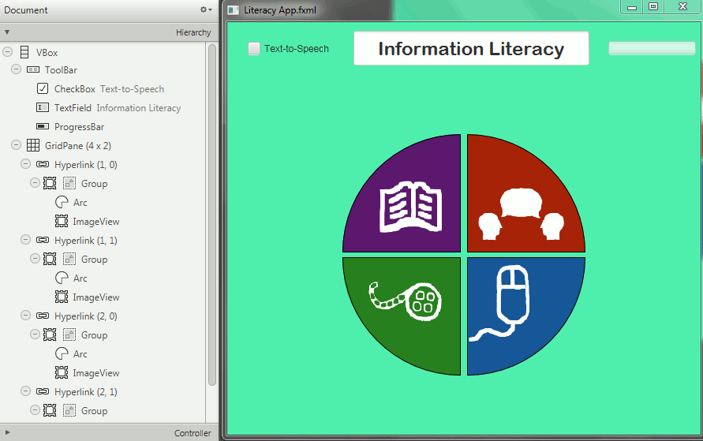

Information Literacy Application Building
This ongoing problem synthesize much of my prior research. See my Information Literacy section for more information about the background research. For a more detailed an comprehensive summary of my proposed application and background research, please see my Java Section includes presentations on many of the foundational mechanics I taught myself in order to begin this project. A screenshot of current progress is seen below.
In addition to the competencies and projects listed in other sections, I did some additional JavaFX work using Java SceneBuilder, in combination with NetBeans and other research to create the basic landing page for the JavaFX Application.

Obviously, based on the image above this project is far from complete, and is not yet a fully functional application. It is still ongoing. I have my broad to-do list of goals listed as follows:
Graphic design: Clean up white icons on the main landing page.
Integration: Link to other JavaFX pages within the same border constraint so that button clicks can open functionality within the application.
Content: Find, reproduce, or create simple informational texts videos and other appropriate content to appear on each button click withint a given area.
Usability: Test the completed app, once completed, on as large and varied a population as possible and make appropriate changes to usability.
Function: Add a recommended next step and other small adjustments to encourage use and efficacy based on research.

Connect with me:


My favorite things to cook (and eat):